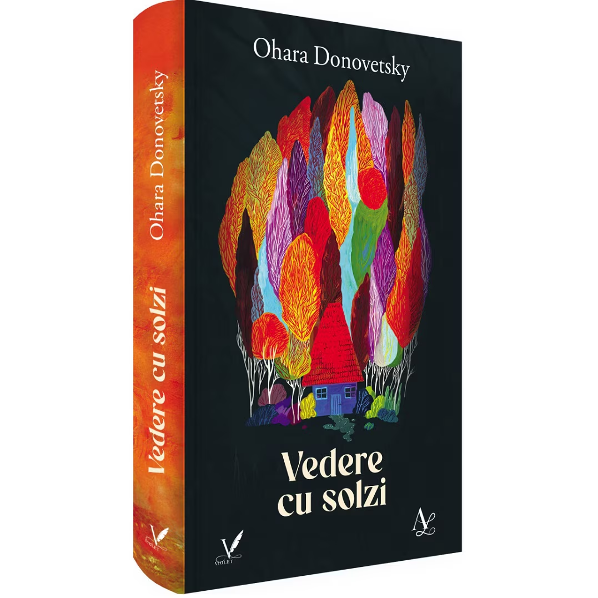

Despre carte
Vedere cu solzi
O poveste care ramane cu tine
Vedere cu solzi propune o incursiune sensibila intr-un teritoriu al memoriei, al transformarii si al fragilitatii umane. Romanul urmareste miscarile interioare ale unei tinere aflate intre varste, intre certitudini si intrebari, surprinzand cu finete felul in care lumea din afara se amesteca mereu cu lumea launtrica.
Cu o scriitura atenta la nuante si la vibratia emotiilor, cartea construieste o atmosfera intensa, tandra si nelinistitoare pe alocuri. Este o lectura despre devenire, despre luciditate si despre acele fragmente de viata care, odata numite, capata greutatea unei revelatii.
In centrul romanului se afla relatia dintre trecut si prezent, dintre ceea ce se pierde si ceea ce poate fi inteles abia mai tarziu. Ritmul interior al povestii pune accent pe introspectie, pe detalii semnificative si pe felul in care experientele personale lasa urme adanci in felul de a privi lumea.
Cartea poate fi privita si ca un traseu al maturizarii, in care sensibilitatea personajului principal devine o forma de cunoastere. Fragilitatea, memoria, doliul si responsabilitatea se impletesc intr-o poveste despre transformare si cautarea propriei identitati.

Personaj principal
Clara
Clara este o tanara aflata la granita dintre adolescenta si maturitate, surprinsa intr-un moment de tranzitie care o pune in fata unor responsabilitati pentru care nu se simte pe deplin pregatita. Proaspat absolventa si devenita invatatoare, ea traieste intens fiecare experienta, fiind marcata de o sensibilitate profunda si de o permanenta stare de nesiguranta. Lumea din jur i se pare uneori stranie si apasatoare, iar schimbarile prin care trece, intoarcerea acasa, pierderea tatalui, adaptarea la un nou rol, o fac sa fie retrasa si introspectiva.
In acelasi timp, Clara este atenta la detalii si la oamenii din jur, observand cu finete gesturi, stari si atmosfere. Desi fragila emotional, dovedeste o puternica dorinta de a face bine si de a-si indeplini rolul, mai ales in relatia cu elevii sai. Empatia si delicatetea o definesc, iar lupta ei interioara intre teama si responsabilitate o transforma intr-un personaj autentic, aflat in cautarea echilibrului si a propriei identitati.
Rezumat scurt
Pe scurt despre carte
In vara anului 1988, Clara, o tanara de 18 ani abia iesita de pe bancile Liceului Pedagogic, se intoarce in orasul natal si incepe primul ei an ca invatatoare. In timp ce incearca sa-si gaseasca locul intr-o lume apasatoare, marcata de frig, lipsuri si reguli tacute, ea poarta cu sine doliul dupa tatal pierdut si nelinistea unei maturizari prea grabite.
Pe fundalul ultimilor ani ai comunismului, Vedere cu solzi aduna povesti de familie, istorii ascunse ale orasului si chipurile unor copii pe care Clara ajunge sa-i iubeasca si sa-i inteleaga. Fiecare intamplare, fiecare voce si fiecare amintire deschid o lume fragila, in care trecutul apasa mereu asupra prezentului.
Romanul urmareste nu doar inceputul vietii adulte, ci si felul in care un om invata sa ramana sensibil intr-o realitate dura, uneori absurda. Vedere cu solzi este o carte despre memorie, pierdere si cautarea propriei identitati, scrisa cu finete si cu acea tensiune discreta care te face sa vrei sa afli ce urmeaza.